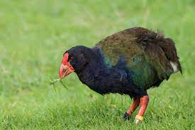

Porphyrio hochstetteri
These huge coots weigh between 2.3 – 3.8 kg. They have strong red legs and a large stout red beak. Their feathers range from a dark royal blue head, neck and breast, to peacock blue shoulders, through to shades of iridescent turquoise and olive green on their wings and back. They feed on mainly the starchy leaf bases of tussock and sedge species, and also tussock seeds when available. If there is a heavy snow cover they will move to the forest and feed mainly on the underground rhizomes of the summer green fern.